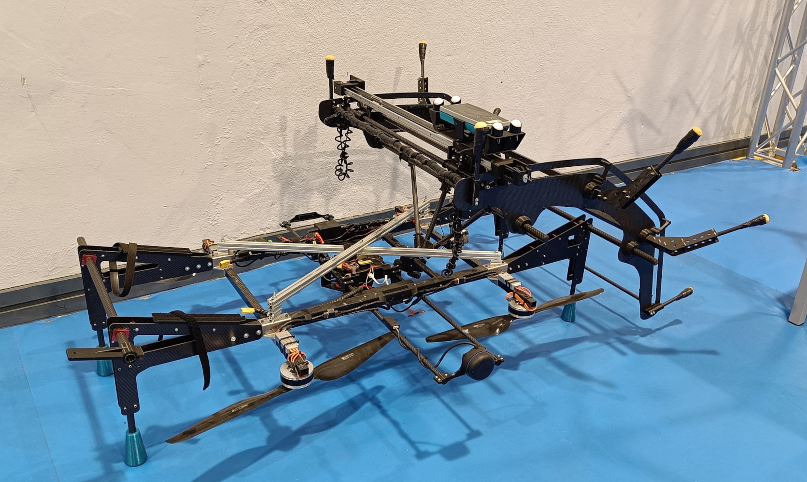

Sensor module design, embedded development, and ML for predictive maintenance. Read more
Highlights
Lowlights
Lessons Learned
ML Regression Toolkit (Internship)
Python toolkit using XGBoost, SHAP, and Streamlit for regression optimization.
Highlights
Lowlights
Lessons Learned
Extended Kalman Filter for a Quadcopter
Developed a 3D position estimation system for an aerial robot using an Extended Kalman Filter (EKF). The setup involved static beacons placed at known locations, measuring distances to the robot.
Built with Webots, ROS, Python, and C++, the system integrates sensor data and simulates beacon-based localization. The project covered EKF development, implementation, and analysis of results.
Highlights
Had to understand how to apply theory to practice.
Gained a lot of experience with handling messy tools like WeBots. The support was poor and ChatGPT was still at a point where you were lucky if it was available due to high demand, so I spent many hours banging my head against the wall.
Got to see lots of cool drones in one of the laboratories of the Universidad de Sevilla, namely through the Griffin project.
The report and presentation were done fully in Spanish.
Lowlights
At the time, my knowledge was more limited regarding software tools like Docker. It slowed me down considerably due to having to work with tools like ROS and WeBots.
Lessons Learned
Cool Drones
Open to see some cool drones. (Click the arrows to open each image).
📷 Big Boy📷 Tunnel Inspection Boy

📷 Birdie📷 Blurry Pipe Boy
Palletizer Robotic Arm
3D Printed Palletizer servo-controlled arm. Objective: pick up pieces and organize them by colour. Components: servo motors, colour sensor, lcd, ATmega328p.
Highlights
Inspired interest in embedded systems
Used different types of components
Hardware restrictions led to creative solutions
The microcontroller only has 2 ports capable of running the servo motors, so separate transistors were used to make a "pin selector" to change how the pins were connected to each servo.
Lowlights
It was during the COVID lockdown, so access to hardware tools was quite limited which made it harder to debug
The component precision was low, so the whole project was a bit finnicky
Lessons Learned
One must be careful with hardware, frying the chip is not difficult
Necessity really leads to ingenuity
Bonus
Ray Tracer
I followed this book to practice some C/C++ while learning something outside "my realm":
Ray Tracing In One Weekend. It takes you from nothing to creating an image like this (click the arrow to open the image):
📷 Final rendered image
It is quite easy to follow and super satisfying to see some basic renders. The final result is very "bare bones", so a typo will leave you with something wrong like this: